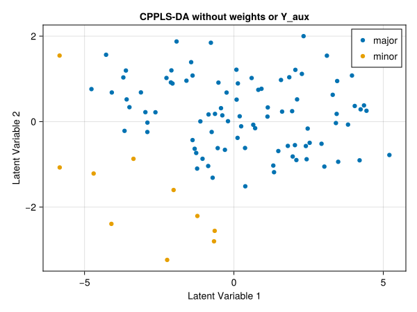
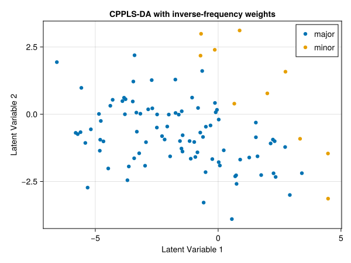
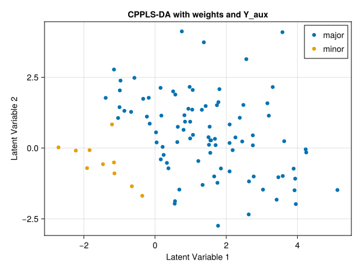
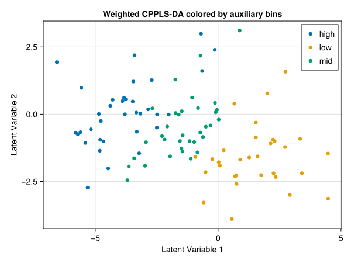
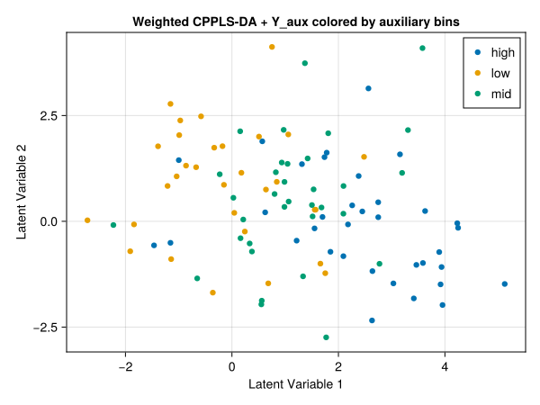

Fit
Model fitting in CPPLS is handled through StatsAPI.fit together with a CPPLSSpec. The same entry point is used for regression and discriminant analysis. Optional obs_weights and Y_aux are available in both regression and discriminant analysis. obs_weights control the contribution of individual observations to the fitted model, while Y_aux adds auxiliary response information that guides the supervised projection without changing the primary prediction target. In discriminant analysis, obs_weights are particularly useful for rebalancing unequally represented classes. Together with gamma, these are the main tuning parameters that users will typically adjust when tailoring a CPPLS fit to a specific problem.
The following example illustrates the effect of observation weights and auxiliary responses using a discriminant-analysis workflow.
Example: Discriminant Analysis with Weights and Y_aux
In this example, we use a synthetic dataset that ships with the package. The dataset was constructed so that a plain PCA score plot is dominated by nuisance structure, while CPPLS-DA recovers the class contrast more clearly. Observation weights reduce the influence of the majority class, and Y_aux can be used to inspect how auxiliary structure is represented in the latent space. In addition to CPPLS, the example uses JLD2 to load the example dataset from disk, MultivariateStats to compute the PCA baseline, CategoricalArrays to work with categorical class and bin labels, and CairoMakie to render static figures for the documentation. These packages need to be installed in the active environment before running the code.
using CPPLS
using CategoricalArrays
using JLD2
using MultivariateStats
using CairoMakie
sample_labels, X, classes, Y_aux = load(
CPPLS.dataset("synthetic_cppls_da_dataset.jld2"),
"sample_labels",
"X",
"classes",
"Y_aux",
)
backend = :makie # use Makie to render all score plots:makieWe start with a Principal Component Analysis (PCA) to inspect the separation of the two classes based on variance alone.
M = fit(PCA, X'; maxoutdim = 2)
scores_pca = predict(M, X')'
pca_fig = scoreplot(
sample_labels,
classes,
scores_pca;
backend=backend,
title="PCA Scores",
xlabel="PC1",
ylabel="PC2"
)
save("pca.svg", pca_fig)
The PCA score plot provides a baseline. In this synthetic dataset, the first two principal components are not optimized for class discrimination, so nuisance variation occupies much of the visible structure.
We next fit a CPPLS-DA model without observation weights or auxiliary responses. We use a fixed gamma = 0.5 throughout this example rather than estimating gamma, so that the main differences between the fits come from the inclusion or omission of observation weights and Y_aux.
spec = CPPLSSpec(
n_components=2,
gamma=0.5,
analysis_mode=:discriminant,
)
m_plain = fit(
spec,
X,
classes;
sample_labels=sample_labels,
)
plain_fig = scoreplot(
m_plain;
backend=backend,
title="CPPLS-DA without weights or Y_aux",
)
save("plain.svg", plain_fig)
Fitting CPPLS-DA directly to the class labels yields a clearer class-oriented score space. Because the classes are imbalanced, however, the majority class has more leverage on the latent variables than the minority class.
We now add inverse-frequency observation weights. This gives the two classes the same total influence on the fitted model and reduces the bias introduced by unequal class sizes.
m_weighted = fit(
spec,
X,
classes;
obs_weights=invfreqweights(classes),
sample_labels=sample_labels,
)
weighted_fig = scoreplot(
m_weighted;
backend=backend,
title="CPPLS-DA with inverse-frequency weights",
)
save("weighted.svg", weighted_fig)
Applying inverse-frequency weights makes the discriminant axis more symmetric. In this example, the main effect is not necessarily an increase in the distance between the groups, but a recentering of the first latent variable so that the class contrast is less biased by class prevalence.
Finally, we add Y_aux in addition to the observation weights. This changes the supervised optimization again. It should not be interpreted as “more class separation at all costs.” Instead, the latent space is allowed to represent structured auxiliary variation explicitly rather than forcing all supervised signal into the class contrast alone.
m_weighted_yaux = fit(
spec,
X,
classes;
obs_weights = invfreqweights(classes),
Y_aux = Y_aux,
sample_labels = sample_labels,
)
weighted_yaux_fig = scoreplot(
m_weighted_yaux;
backend = backend,
title = "CPPLS-DA with weights and Y_aux",
)
save("weighted_yaux.svg", weighted_yaux_fig)
To inspect the effect of Y_aux, it is useful to color the score plots by coarse auxiliary bins rather than by the class labels. Without Y_aux, auxiliary structure may be present in the fitted scores, but only implicitly.
aux = vec(Y_aux[:, 1])
aux_bins = categorical(ifelse.(aux .< -0.5, "low", ifelse.(aux .> 0.5, "high", "mid")))
weighted_aux_fig2 = scoreplot(
sample_labels,
aux_bins,
m_weighted.T[:, 1:2];
backend = backend,
title = "Weighted CPPLS-DA colored by auxiliary bins",
)
save("weighted_aux2.svg", weighted_aux_fig2)
With Y_aux included, the score space can be reorganized so that auxiliary structure is represented more explicitly. Depending on the dataset, this may improve interpretation without necessarily increasing the visible distance between the classes in the class-colored plot.
weighted_yaux_aux_fig3 = scoreplot(
sample_labels,
aux_bins,
m_weighted_yaux.T[:, 1:2];
backend = backend,
title = "Weighted CPPLS-DA + Y_aux colored by auxiliary bins",
)
save("weighted_aux3.svg", weighted_yaux_aux_fig3)
StatsAPI.fit — Function
fit(
model::CPPLSSpec,
X::AbstractMatrix{<:Real},
Y_prim::AbstractMatrix{<:Real};
kwargs...
)
fit(
model::CPPLSSpec,
X::AbstractMatrix{<:Real},
sample_classes::AbstractCategoricalArray{T,1,R,V,C,U};
kwargs...
) where {T,R,V,C,U}
fit(
model::CPPLSSpec,
X::AbstractMatrix{<:Real},
sample_classes::AbstractVector;
kwargs...
)Fit a CPPLS model using the StatsAPI entry point and an explicit CPPLSSpec. The model specification supplies the number of components, the gamma configuration, centering, the analysis mode, and all numerical tolerances, while the call to fit supplies data, optional weights, auxiliary responses, and label metadata.
When Y_prim is provided, it is treated as the primary response block. When sample_classes is provided, the labels are converted to a one-hot response matrix, class names are inferred as response labels, and the fit is forced to discriminant analysis; model.analysis_mode must be :discriminant or an ArgumentError is thrown.
The gamma setting in model may be a fixed scalar, a (lo, hi) tuple, or a vector mixing scalars and tuples. Non-scalar settings trigger per-component selection by choosing the value that yields the largest leading canonical correlation between the supervised projection and the primary responses, and the resulting gamma values are stored in the fitted model.
Keyword arguments accepted by fit include obs_weights for per-sample weighting, Y_aux for auxiliary response columns, and optional sample_labels, predictor_labels, response_labels, and sample_classes metadata for diagnostics and plotting. Y_aux must have the same number of rows as X and is concatenated to Y_prim internally to build the supervised projection, while prediction targets always remain the primary responses.
The return value is a CPPLSFit containing scores, loadings, regression coefficients, and the metadata needed for downstream prediction and diagnostics. Use CPPLS.fit or StatsAPI.fit when disambiguation is required in your namespace.